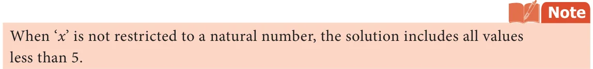
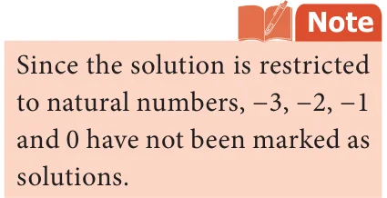
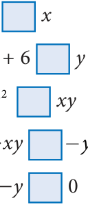

Earlier we have learnt to construct linear equations. Let us now study about 'Inequations'.
As per the norms the minimum age limit to own a driving licence is 18 years. Therefore, when Rajiv owns a driving licence, we can say that he is at least 18 years of age.
Now, if Rajiv's age is represented by x, then this statement can be written mathematically as \(x \ge 18\), that is, we are not sure about his age, still we can say that his age is greater than or equal to 18 years.
Similarly, the statement 'This jug can hold up to 5 litres of water' can be written mathematically as \(x \le 5\), where 'x' represents the volume of water in the jug.
We know that, the sum of the measures of any two sides of a triangle is greater than the measure of its third side. Thus, if the measure of the three sides are represented by a, b and c units, then we may write this fact as \(a + b > c\), \(a + c > b\) and \(b + c > a\).
When \(x \ne 10\), then either \(x > 10\) or \(x < 10\). That is, if the value of the variable 'x' is not 10, then the value of 'x' will either be greater than 10 or be less than 10.
An algebraic statement that shows two algebraic expressions being unequal is known as an algebraic inequation. In general, when two expressions are compared, one might be; less than (<), less than or equal to \((\le\) ), greater than (>), greater than or equal to \((\ge\) ) the other.
In an inequation, the algebraic expressions are connected by one out of the four signs of inequalities, namely, >, \(\ge\) , < and \(\le\) .
Try these
Construct inequations for the following statements:
- Ramesh's salary is more than ₹25,000 per month.
- This lift can carry maximum of 5 persons.
- The exhibition will be there in town for at least 100 days.
3.5.1 Solving linear Inequations
A simple linear equation has atmost one solution, but a linear inequation may have many solutions.
To solve an inequation, it is necessary to know the set of values that the variable symbol can be substituted with. The collection of of all such values of an inequation is known as solution of the inequation.
For example, the solution of the equation \(3x - 3 12\) is 5. (How?) Let us find the solution for the inequation \(3x - 3 < 12\), where x is a natural number. Note that, the =
Add 3 on both sides, we get \(3x - 3 + 3 < 12 + 3 3x < 15\) Divide by 3 on both sides, we get \(\frac{3x15}{33} < x < \Rightarrow 5\) Hence, x takes value which is less than 5 and \(\Rightarrow x\) is a natural number. Thus, the solution for this inequation are 1, 2, 3 and 4.
solutions of this inequation are 'natural numbers'. Now,

Rules to solve inequation
While solving an inequation, the rules for transposition in case of inequalities are the same as for equations.
value of the inequation. Example: \(10 > 5 10 + 1 > 5 + 1 11 > 6\). Extending this result, when adding any number ' \(\Rightarrow\) x' instead of 1, the inequality \(\Rightarrow 10+ x >5+ x\) remains unchanged.
- Addition of the same number on both sides of the inequation does not change the change the value of the inequation. Example: \(10 > 5 10 - 1 > 5 - 1 9 > 4\). Extending this result, when subtracting any number \(\Rightarrow x\) instead of 1, the inequatity \(\Rightarrow 10 - >x 5 - x\) remains unchanged.
- Subtraction of the same number from both sides of the inequation does not change the value of the inequation. Example: \(10 > 5 10 \times 2 > 5 \times 2 20 > 10\). Similarly, when multiplying any positive number \(x \Rightarrow\) instead of 2, the inequatity \(\Rightarrow 10 \times x >5 \times x\) remains unchanged.
- Multiplication by the same positive number on both sides of the inequation does not does not change the value of the inequation. Example: \(10 > 5 \frac{105}{55} > 2 > 1\). Similarly, when dividing any non zero positive number x instead of 5, the inequatity \(\Rightarrow \Rightarrow \frac{105}{xx} >\) remains unchanged.
- Division by the same non-zero positive number on both sides of the inequation
Note
When both sides of an inequation are multiplied or divided by the same non-zero negative number, the sign of inequality is reversed. For example, consider \(3 < 12\). Multiplying \(- 1\) on both sides, we get, \(3 \times (- 1) < 12 \times (- 1)\)
\(- 3 < - 12\).
But, it is not true. Because, \(- 3\) is greater than \(- 12\). So, \(- 3 > - 12\). Note that the sign of inequality is reversed. To generalize , when \(x < y\) is multiplied by \(- 1\) on both sides , we get \(- > - x y\) .
Interchanging the expressions on both sides of an equation, does not make any change in the equation. For example, \(x +3=5\) and \(5= x +3\) both are same.
But, if the expressions on both sides of an inequation are interchanged, the sign of inequality must be reversed.
For example, \(30 > 20\) is the same as \(20 < 30\) and \(- 18 < - 9\) is the same as
\(- 9 > - 18\).
Example 3.10 Solve: \(2x + 4 < 18\), where x is a natural number.
Solution
\(2x + 4 < 18\)
\(2x + 4 - 4 < 18 - 4\) [Subtracting 4 from both sides]
\(2x < 14\) [Divide by 2 on both sides]
\(x < 7\)
Since the solution belongs to natural numbers, that are less than 7, we take the values of the x as 1, 2, 3, 4, 5 and 6.
Therefore, the solutions are 1, 2, 3, 4, 5 and 6.
Example 3.11 Solve: \(5 - 7x \ge 33\), where x is an integer.
Solution
\(5 - 7x \ge 33\)
\(5 - 5 - 7x \ge 33 - 5\) [Subtracting 5 from both sides]
\(x \le - 4\) [since, it is divided by a negative number, the inequality is reversed] \(\frac{ - 7x28}{ - 77} \ge -\) [Dividing both sides by \(- 7]\) Since, solution belongs to the set of integers, that are less than \(- 4\), we take the values of x as \(- 4\), \(- 5\), \(- 6\), ... Therefore, the solutions are \(- 4\), \(- 5\), \(- 6\),... .
\(- 7x \ge 28\)
Think
Hameed saw a stranger in the street. He told his parent, "The stranger's age is between 40 to 45 years, and his height is between 160 to 170 cm".
Convert the above verbal statement into an algebraic inequations by using x and y as variables of age and height.
Example 3.12 If one worker earns ₹200 per day, how many workers can be employed within a monthly budget of ₹3 Lakh?
Solution
Let the number of workers be x. Then, the wages that x workers will earn per day ₹200x The wages that x workers will earn per month ₹(200= \(x \times 30)\) ₹6000x Given that, this amount cannot exceed ₹300000.= = Otherwise, it can be written as \(6000x \le 300000 \frac{6000x300000}{60006000}\) £ [Divide by 6000 on both sides]
\(x \le 50\)
Thus, up to 50 workers can be employed on a monthly budget of ₹300000.
3.5.2 Graphical representation of Inequation
The solutions of an inequation can be represented on the number line by marking the true values of solutions with different colour on the number line.
Look into the following inequations and its graphical representation on number line. Here, we consider the solution belongs to natural numbers. That is, each and every value of the solution is a natural number.
- When \(x < 3\), the solution in natural numbers are 1 and 2. Its graph on number line is
shown below:
-9 -8 -7 -6 -5 -4 -3 -2 -1 0 1 2 3 4 5 6 7 8 9
- When \(x \ge 3\), the solutions are natural numbers 3, 4, 5, ... and its graph is as shown
below:
-9 -8 -7 -6 -5 -4 -3 -2 -1 0 1 2 3 4 5 6 7 8 9
- To mark the values represented by the inequation \(2 \le x \le 5\), the solutions are set of
natural numbers 2, 3, 4 and 5 and its graph is as given below:
-9 -8 -7 -6 -5 -4 -3 -2 -1 0 1 2 3 4 5 6 7 8 9
Example 3.13 Represent the solutions \(- 8 < 2x < 10\) in a number line, where x is a natural number.
Solution

\(- 8 < 2x < 10\)
\(- < \frac{82x10}{222} <\) [Dividing the inequation by 2]
\(- 4 < x < 5\)
Since the solution belongs to the set of natural numbers, the solutions are 1, 2, 3 and
- It's graph on the number line is shown below:
-9 -8 -7 -6 -5 -4 -3 -2 -1 0 1 2 3 4 5 6 7 8 9
Example 3.14 Represent the solutions of \(3x + 9 \le 12\) in a number line, where x is an integer.
Solution
\(3x + 9 \le 12\)
\(\frac{3x912}{333} + \le\) [Dividing the inequation by 3 on both sides]
\(x + 3 \le 4\)
\(x + 3 - 3 \le 4 - 3\) [Subtracting 3 from both sides]
\(x \le 1\)
Since the solution belongs to integers, the solutions are 1, 0, \(- 1\), \(- 2\), …. It's graph on the number line is shown below:
-9 -8 -7 -6 -5 -4 -3 -2 -1 0 1 2 3 4 5 6 7 8 9
Example 3.15 Solve the inequation: \(- 2 \le z + 3 \le 5\), where z is an integer. Also, represent the solution, graphically.
Solution
\(- 2 \le z + 3 \le 5\)
\(- 2 - 3 \le z + 3 - 3 \le 5 - 3\) [Subtracting \(- 3\) from the inequation]
\(- 5 \le z \le 2\)
Since the solution belongs to integers, the solutions are \(- 5\), \(- 4\) , \(- 3\), \(- 2\), \(- 1\), 0, 1 and
- It's graph on the number line is shown below:
-9 -8 -7 -6 -5 -4 -3 -2 -1 0 1 2 3 4 5 6 7 8 9
Example 3.16 Solve graphically: \(6y - 5 \le 2y + 7\), where y is an integer.
Solution
\(6y - 5 \le 2y + 7\)
\(6y - 2y - 5 \le 2y - 2y + 7\) [Subtracting 2y from both sides]
\(4y - 5 \le 7\)
\(4y - 5 + 5 \le 7 + 5\) [Adding 5 on both sides]
\(4y \le 12\)
\(\frac{4y}{4} \le \frac{12}{4}\) [Dividing by 4 on both sides]
\(y \le 3\)
Since the solution belongs to integers, the solutions are 3, 2, 1, 0, \(- 1\), \(- 2\),..... It's graph on the number line is shown below:
-9 -8 -7 -6 -5 -4 -3 -2 -1
- Given that \(x \ge y\). Fill in the blanks with suitable inequality signs.

\(+ 6\)
- \(- -\)
- Say True or False.
- Linear inequation has almost one solution.
- When x is an integer, the solutions for \(x \le 0\) are \(- 1\), \(- 2\),...
- An inequation, \(- 3 < x < - 1\), where x is an integer, cannot be represented in the number line.
- \(x < - y\) can be rewritten as \(- y < x\)
- Solve the following inequations.
- \(x \le 7\), where x is a natural number.
- \(x - 6 < 1\), where x is a natural number.
- \(2a + 3 \le 13\), where a is a whole number.
- \(6x - 7 \ge 35\), where x is an integer.
- \(4x - 9 > - 33\), where x is a negative integer.
- Solve the following inequations and represent the solution on the number line:
- \(k > - 5\), k is an integer.
- \(- 7 \le y\), y is a negative integer.
- \(- 4 \le x \le 8\), x is a natural number
- \(3m - 5 \le 2m + 1\), m is an integer.